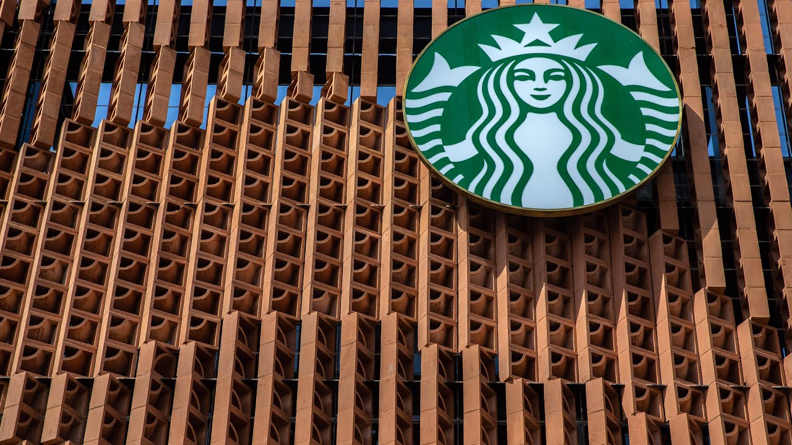

来B站一起耍【Global每日英语简报】
【星巴克销售额下滑速度超出预期】
Summary: The report shows weaker-than-expected U.S. sales for Starbucks but stronger international performance, particularly in China. Analysts discuss strategic initiatives like reducing wait times and app improvements, cost management, and challenges from tariffs and commodity price volatility.
摘要： 报告显示，星巴克在美国的销售额低于预期，但国际业务表现强劲，尤其是中国市场。分析师讨论了减少等待时间、优化应用程序等战略举措，成本管理，以及关税和大宗商品价格波动带来的挑战。

⏱️ Estimated Reading Time: 10 min
And Ali, we were expecting some softness there.
Ali，我们预计那里会出现一些疲软。
We certainly saw it in the U.S. side.
我们在美国市场确实看到了这一点。
One thing that was surprising, we actually saw a little bit more strength in China and overseas.
令人意外的是，我们在中国和海外市场看到了更强的表现。
What did you make of the report?
你对这份报告怎么看？
Yeah. I was encouraged to see the better results from the international segment.
是的，国际业务的良好表现让我感到鼓舞。
I think in terms of what we were looking for in the front, we're certainly expecting a little bit of a weaker print from from a comp perspective and certainly saw that in terms of the U.S., but not significantly worse than we were expecting, but definitely encouraged by the solid international results.
就我们之前的预期而言，我们确实预计同店销售会稍弱一些，美国市场也确实如此，但并未比预期差太多，而国际业务的稳健表现确实令人鼓舞。
So encouraged to see that.
因此，看到这一点很受鼓舞。
What exactly do you want to hear out of Brian Nicole later today in terms of articulating his long term vision for Starbucks?
关于Brian Nicole今天晚些时候阐述星巴克的长期愿景，你具体想听到什么？
I think certainly we'd like to hear an update on the different strategic initiatives that they've outlined, some of the bigger things that we want to hear about the the focus on the four minute wait time for orders, any progress that they've made on that we think will be important.
我们当然希望听到他们概述的不同战略举措的最新进展，尤其是关于将订单等待时间控制在四分钟以内的进展，我们认为这很重要。
And then also just in terms of the order sequencing within the app, that's a pilot test that they talked about during the Q1 call and that was in just three stores.
此外，关于应用程序内的订单排序功能，这是他们在第一季度财报电话会议上提到的试点测试，当时仅在三家门店进行。
But I think is something that's going to be very important for the future with future with the mobile ordering.
但我认为这对未来的移动点单非常重要。
So I'm curious to hear an update on that because I think it'll be really important.
因此，我很想听到这方面的最新进展，因为我认为这非常重要。
Both of those metrics are improving throughput for Starbucks in the future.
这两项指标都将提升星巴克未来的运营效率。
I'm just going to jump in here really quickly because we also just got earnings out of SNAP, the social media company that teenagers love.
我简单插一句，因为我们刚刚拿到了社交媒体公司SNAP的财报，这家公司深受青少年喜爱。
And here we have a company saying its daily active users were about 460 million, just slightly higher than the expected 459.
该公司表示，其日活跃用户约为4.6亿，略高于预期的4.59亿。
And that top line revenue has grown, but headwinds began in the current quarter, first quarter revenue coming in at $1.36 billion, just slightly above the consensus estimate of 1.35 billion.
总收入有所增长，但本季度开始面临阻力，第一季度收入为13.6亿美元，略高于市场预期的13.5亿美元。
And SNAP has committed former formal guidance for this quarter because of the uncertain macro conditions.
由于宏观经济环境的不确定性，SNAP撤回了对本季度的正式指引。
So again, top line revenue grew in the first quarter, but the headwinds began showing up in that period and as a result, it has admitted for more second quarter guidance, the stock currently down about 2% in after hours trade.
因此，尽管第一季度总收入增长，但阻力已显现，因此该公司撤回了第二季度的指引，股价在盘后交易中下跌约2%。
Abby, let me come back to you when it comes to Starbucks, because one thing about Brian Niccol, he's done a tremendous job at his previous employer, Chipotle, but he didn't necessarily have the international experience that leading Starbucks would require some of his initiatives to improve the customer experience at Starbucks in the U.S., including you mentioned reducing the wait time to under 4 minutes.
Abby，回到星巴克的话题，关于Brian Niccol，他在前雇主Chipotle表现出色，但他可能缺乏领导星巴克所需的国际经验。他在美国市场推行的一些改善客户体验的举措，比如将等待时间缩短至4分钟以内。
Do those things translate well in a market like China?
这些举措在中国这样的市场是否适用？
We think it's important.
我们认为这很重要。
We think it's important.
我们认为这很重要。
Certainly, I think that's universal.
当然，我认为这是通用的。
The one thing with Brian, he's really been focused on the U.S. market and less so on the international.
Brian一直专注于美国市场，对国际市场的关注较少。
I think when he came out and spoke about a lot of his plans, he's really been focused on turning around the U.S. business.
我认为他在阐述计划时，主要专注于扭转美国业务的局面。
But I think a lot of the different initiatives that he's done will translate to China and the other international markets.
但我认为他的许多举措也适用于中国和其他国际市场。
How are you thinking about the cost to put in some of those efficiencies?
你如何看待实现这些效率提升的成本？
He's talked about store renovations because some of the stores were looking a little bit tired, at least here in the U.S., all those efficiency improvements.
他提到了门店翻新，因为部分门店看起来有些陈旧，至少在美国是这样，所有这些效率提升措施。
I mean, if you want to get wait times under 4 minutes, you're going to have to hire more people.
如果想将等待时间控制在4分钟以内，就需要雇佣更多员工。
You're going to have to bring back the condiment bars.
还需要重新提供调料台。
How much are you comfortable seeing Starbucks spend on these improvements?
你认为星巴克在这些改进上投入多少是合理的？
I think the one thing I'll say is I agree they're going to need to spend to make the improvements.
我认为他们确实需要投入资金进行改进。
But we heard even on the last quarterly earnings call, a much more deliberate and just thoughtful way of thinking about costs.
但在上一次季度财报电话会议上，我们听到他们对成本的思考更加谨慎和周密。
And just the example I'll give is when they talked about the siren technology, instead of those being rolled out to all of the stores, they're really focusing on that now on only the top quartile of stores because those are the stores that really need that advanced technology.
例如，他们提到“海妖技术”时，并未在所有门店推广，而是专注于前25%的门店，因为这些门店真正需要这项先进技术。
So I think in terms of certainly there's going to be incremental costs that are going to come out.
因此，肯定会有增量成本产生。
But I've been encouraged thus far by Brian and the team taking a much more deliberate and thoughtful approach to costs, not just being across the board and necessarily in every store, but instead in the stores specifically that I'll need to see those costs.
但到目前为止，Brian和团队对成本采取了更谨慎和周密的策略，不是一刀切地应用于所有门店，而是有针对性地投入，这让我感到鼓舞。
Headlines also crossing the wire here.
还有最新消息。
On the idea that Starbucks, as you would expect, says that it is seeing challenges when it comes to tariffs as well as obviously the volatility that we've been seeing really long before this president's administration in coffee prices as well as other commodity prices that might actually affect the company.
星巴克表示，正如预期的那样，它正面临关税问题以及咖啡价格和其他大宗商品价格波动的挑战，这些波动在当前政府上任前就已存在，可能对公司产生影响。
What options do they have to mitigate that?
他们有哪些缓解措施？
Those are two of the key the key factors that we've been watching.
这是我们一直在关注的两个关键因素。
I think one of the obvious ones will be in terms of pricing, but I think they'll continue to be very deliberate with pricing given the sensitivity there.
我认为最明显的方式是调整价格，但由于价格敏感性，他们会非常谨慎。
We also saw them make some changes in the first quarter around eliminating the alternative dairy costs.
我们还看到他们在第一季度取消了植物奶的附加费。
So I think that's one way for them to do it.
因此，我认为这是一种方式。
It's just pricing across the board, but I think they'll be very strategic where they need to price that.
虽然可以全面调价，但他们会非常有策略地选择调整范围。
And I also just think their scale gives them a natural advantage to be able to help both hedge some of the costs and be able to find more creative ways to offset them, given their set, their scale relative to some of their peers.
此外，我认为他们的规模优势使他们能够对冲部分成本，并找到更具创意的方式来抵消这些成本，因为他们的规模远超同行。
Yeah. Can you talk a little bit more about that?
是的，你能详细谈谈这一点吗？
Because we know that they usually hedge against rises in Arabica coffee prices, those beans through futures, and they're not usually relying on Robusta beans, But is that an option for a company like Starbucks or do they still need to get back to basics first before they expand and get creative with with their beans?
因为我们知道他们通常通过期货对冲阿拉比卡咖啡豆价格上涨的风险，而不依赖罗布斯塔豆。但对于星巴克这样的公司来说，这是否可行？还是说他们需要先回归基础，再尝试创新？
I think both will be important.
我认为两者都很重要。
I think really improving the customer experience is going to be paramount for them, and I think that has clearly been one of the main areas that Brian has been focused on.
我认为提升客户体验对他们至关重要，而这显然是Brian关注的重点之一。
But I also think the cost side of things is really important and I think that they'll continue to be strategic in how they try to reduce some of those costs and how to be able to solve some of those problems.
但我也认为成本管理非常重要，他们会继续采取策略来降低成本并解决问题。
So I don't think it's an either or.
因此，我认为这不是非此即彼的选择。
I think that they'll be able to do both of those.
我认为他们可以同时做到这两点。